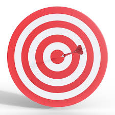

Our Sweet Story

From Home Kitchen to Studio
Max’s Cupcake Studio was born from a simple idea: to make people smile. For as long as Max could remember, baking was more than a hobby, it was a form of art. A small home kitchen, filled with the aroma of vanilla and warm chocolate, was the first studio. It was here that Max perfected every recipe, viewing each cupcake as a small canvas for creativity and a vehicle for joy.
What started as baking for family and friends quickly evolved into a mission. Max realized that a perfect cupcake isn't just about ingredients; it's about the care and passion put into every single one. Every batter is mixed with meticulous attention, every frosting is whipped to a flawless texture, and every decoration is placed with a sprinkle of heart.
At Max's Cupcake Studio, we believe that life is better with a little bit of sweetness. We are dedicated to creating beautiful, delicious, and memorable cupcakes that make every occasion, big or small, feel like a celebration. Thank you for joining us on this sweet journey.

Our Mission
Our mission is to spread joy, one cupcake at a time. We are dedicated to handcrafting delicious, high-quality cupcakes that celebrate life's sweet moments and bring warmth to our community.
Our Vision
Our vision is to be the premier destination for delightful cupcakes, where every treat is a work of art and every customer feels like a part of our sweet, creative family. We aspire to be a source of happiness and a place where cherished memories are baked fresh every day.